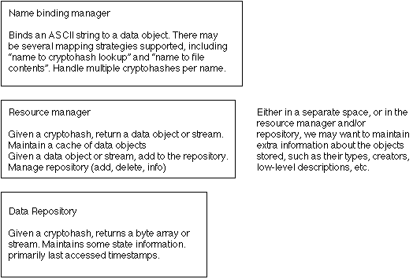

General Repository Design
Last updated:
- [98/07/08 Karl] Rearranged
some paragraphs and rewrote intro
- [98/07/01 Karl] Split
off Repository interfaces into their own document and
started this meta document
Introduction
[98/07/08 Karl] The Repository was conceived of as an object which would hold data of
various kinds and allow retrieval of said data through the use of a key.
Over time the set of data types has grown to include such diverse
elements as: bit maps, appearance files, sound files, possibly
code and/or class files, and an almost fanatical devotion to the Pope.
The key became standardized as a CryptoHash of the data.
Repositories needed to be read-only in some cases. Some needed to be
writeable. There needed to be different Repositories for data from different
sources or with different purviews (cached data, local data, published data,
distribution data). The art production line needed to deal with file names
and strings rather than CryptoHashes. The raw data in a Repository needed
to be certifiable with EC Certificates. If a Repository was asked for data
with a CryptoHash it didn't contain, it needed to know how to look elsewhere
for the data; this led to the evolution of hints, or strings which gave a clue
as to where to look, usually in the form or URLs or partial URLs (whatever
that means). It became incumbent on Repositories to be able download data
from "The Net".
[98/06/22 Bob] The current data repository has many problems, both in implementation
and interface. The purpose of this document is to capture a simpler, layered
architecture for managing the resources in the data repository that meets
the needs of its clients (runtime and production).
Related Documents
The Repository design document.
The Repository File design document.
The Repository Management design document.
The Repository Production design document.
Client requirements from a production
perspective by Tony.
Bill has encapsulated a description
of the r167 data repository.
Original Requirements a la Randy (98/06/25)
- Provide for retrieval of certified objects
- transmission of certificate info to "server"/region
- global unique identification of objects (currently CryptoHash)
- Transmit all data and certificates to others (data unpacking is recursive)
- local caching system
- 3rd party hand off mechanism (federated "repository servers";
hints; publication; URLs; ftp/http/whatever)
- dynamic certification
- certificate renewal (through "repository server")
- Support multiple repositories
- Allow asynchronous retrieval of data
- Allow dynamic policy tweaking (added during 6/15 meeting)
- certificate agency should work with "repository server"
Wish list from Randy (98/06/25)
- "Tweakable" policies for order of repository searching
- follow hints first
- ask user first
- check with "region"/server first
- Handling of "group" requests (grab all pieces of an appearance as one
block of data, for example)
- Actually implementing all the downloading via hints stuff
Latest Requirements a la Bob&Bill Show (98/06/22)
- Efficient retrieval of blobs of data both as byte arrays and streams.
- Simple API for adding and retrieving data blobs, and some way of removing
"stale" data.
- Caching strategies so that single instances of data blobs are loaded
and managed without intervention by the clients.
- Mapping of name spaces onto data blobs (most likely name to CryptoHash
mapping).
- CryptoHash support - this is how we get stuff out of a Repository
- String name support
- unzipping - turn a working resource file back into a hierarchy of
files and folders
- versioning - being able to replace an old bitmap with a new one;
the name would be the same, but the CryptoHash wouldn't, so we need
to be able to "put" the new one over the older one using the name
- displaying -- display the contents of a repository in a human-readable
format-- most likely an emulation of a simple file system.
- Certificate support - The repository should be able to hold certificates
for its objects. The process of generating and using the certificates
should be separate.
- Runtime support & caching [Claire] -- a resource manager
which takes over the caching functions of textures found in the dynamics
engine and generalizes this for other data types
- Separate Resource Manager from Repository [Claire]
- Track extra info about objects
- Reporting - query Repository about tracked info above
- Speedy - Don't make production people wait to make simple changes
- File support - repositories as text files
Repository Manager Requirements from Jeff (98/06/24)
- Serves up art/sound/geometry/code.
- Not necessarily realm specific -- eg a "turf" user could publish her art in
a repository server and other's would fetch it from the repository server
instead of the user's machine.
- Policies determine if who can Add/Remove resource to the repository service.
For example, if you are a "member" of a community, then you can add, say,
10meg
to the community repository server.
- Potentially, a repository service is integrated with the certification
service.
If CAs are certifying art/sound/geometry/code, then the certs need to also
be in the repository. _and_ the CA needs to be able to revoke certs. Since
certifying and serving up resources are somewhat coupled, it may make
sense for the CA to also host the repository service.
Architecture

[Bob] The services provided by the new repository are a superset of the previous
version, but they are layered into smaller, more manageable and general
components.
[Karl:98/06/25] Our
original version of the data repository conflated everything into the
Repository itself--Multiple directories of repository files, caching
schemes, etc. I am proposing (as advised by several people) to split the
problem space up into separate components: Repository, RepositoryFile,
RepositoryManager and RepositoryProducer.
A Repository at the interface level will be a single source of data
(RandomAccessFile, SQL database, TCP/IP socket to a remote source,
whatever), from which the user can access data via a CryptoHash key.
The writeable version will allow input of data and return the CryptoHash
for it.
A RepositoryFile is an implementation of the Repository which sits
(at this point) on top of a RandomAccessFile of data, reading it into
Hashtables at construction time. The writeable version will store new
information into separate Hashtables and write out only the new stuff
on command rather than writing out everything; if you don't add anything
to such a repository, no re-writing of the file needs to be done; if you
add only a few things, updating the file is a quick operation.
The RepositoryManager picks up all of the meta-tasks such as organizing
multiple Repositories (files, caches, network sources) and dealing with
cacheing recently looked up data with options to reread the original source
instead of using a cached version. It will also handle streaming from one
Repository to another for large sets of data, and it will allow manipulation
of the protocol governing how things are looked up--Either from local caches
or files first, or from the network first, or whatever other schemes we may
come up with.
A RepositoryProducer is to be used for building repositories offline,
and will deal in String names for the data and correlate said names to
CryptoHashes internally so that the user never has to know about such things.
This is the tool of choice for a production group dealing with
putting together a Repository for a new catalog of art and animation--Basically
a tool for build Repositories from scratch offline rather than tweaking a
Repository while running an application such as HabiSplat.
Off the shelf alternatives
Some of the new functions in the 1.2
Classloader may be applicable to a generalized resource manager.
Design Issues
Resolved Issues
- [98/06/25 Karl]
The current design
doesn't deal with some of Tony's wishes about adding extra information and
generating reports. This could be added later, but would result in changes
going all the way up to the Repository interface, not just twiddling with
the RepositoryFile's RandomAccessFile format. -- resolved [98/06/30] by
moving it into the "extra info"
portion of the Repository File format
Open Issues
- [98/05/29 Bob]
I am presuming that the primary resource type will be data stored in the
repository and that the CryptoHash method of lookup is sufficient. In the
current system, the only place that the name-to-CryptoHash translation
is done is during realm-text parsing. For the production case, where we
want filename lookup to succeed, initially I am ignoring caching completely,
since it is a debug mode feature. If we end up with a generalized caching
mechanism that will support caching the filename case easily, then we should
use it, but I am unwilling to state it as a requirement given the scope
of work we still have to do.
- [98/06/18 Bill] I get the impression that alpha testers are hacking
their realm text files. If this is an important part of the user experience,
then we will probably need to deliver the name to CryptoHash binding in
the customer system. We could also deliver it as an extra cost item depending
on product development's requirements.
- [98/07/01 Karl]
Merge Tony's and Bill's separate documents into the requirements section of
this one; then split out the requirements into the specific subdocuments.
To Cosm Survey page
To GUI Architecture Overview page
{kind=link}